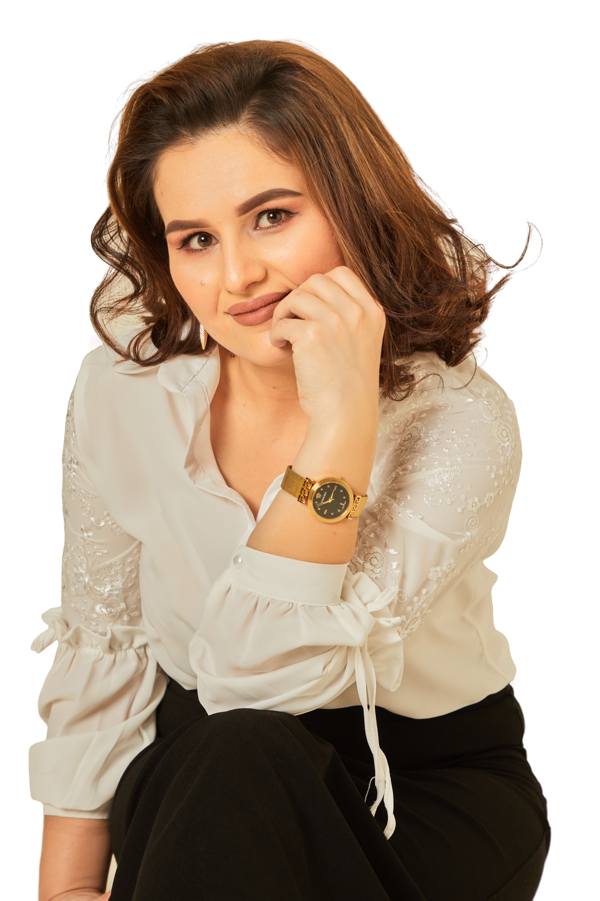

Mohinur Abdullayeva bilan
Uchrashuv mavzusi
Shukronalik hissi.
1 ta katta maqsad uchun ongni tayyorlash
Mehmon spiker
Sarvinoz Alisherovna
psixolog, vrach psixoterapevt
16-sentabr
11:00
Toshkent sh.